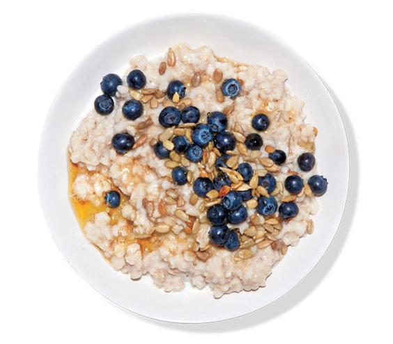

Oatmeal With Blueberries, Sunflower Seeds, and Agave
Directions
- Boil water with oats.
- Cook for about 5 minutes over medium heat, stirring occasionally.
- Top with blueberries and sunflower seeds.
- Finish off with a drizzle of agave nectar.
Ingredients
- 1 cup of old-fashioned rolled oats
- 1/2 cup of blueberries
- 1 tablespoon of sunflower seeds
- 1 tablespoon of agave nectar